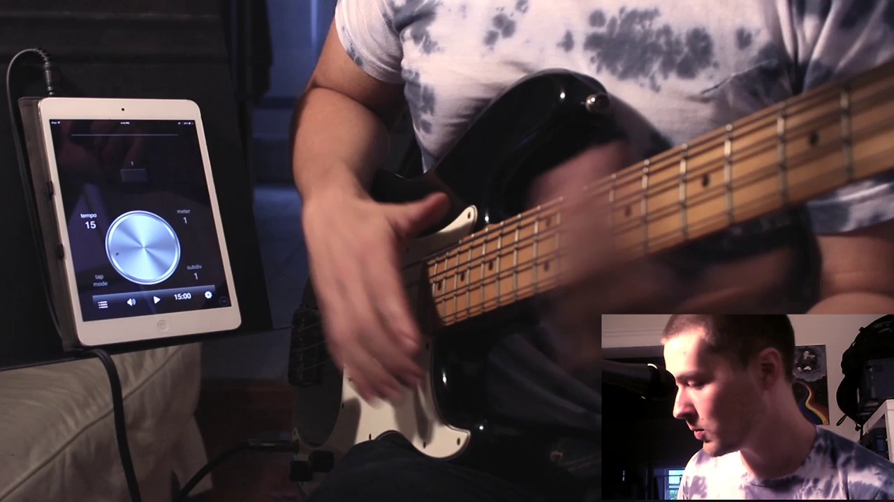
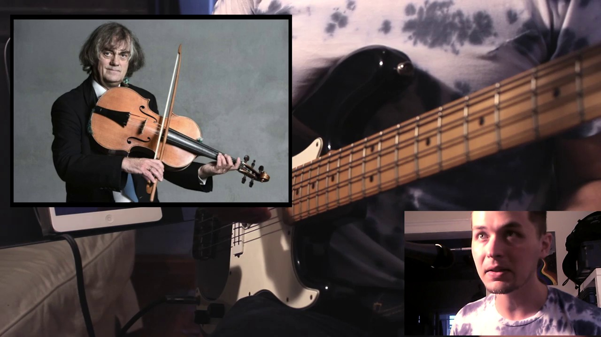
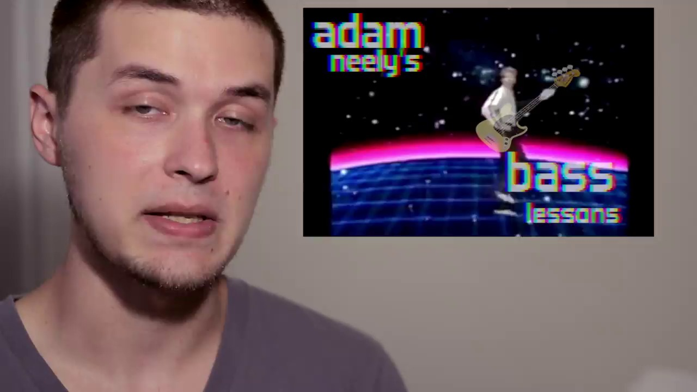

Key Moments





Summary & Script
7 Cool Metronome Games [ AN's Bass Lessons #5 ]
Source: https://www.youtube.com/watch?v=u6hg8GcLc-4
Video ID: u6hg8GcLc-4
Overview
In this lesson Adam Neil shows how to turn a simple metronome into a powerful practice tool for bass players. By shifting where the click lands—onto “ands,” beats 2 & 4, or even only once per measure—learners can train their internal pulse, improve subdivision awareness, and expose timing inconsistencies. He demonstrates each concept using Bon Jovi’s “Living on a Prayer” at various tempos and explains how visual metronome cues can help or hinder rhythmic feel.
Topics Covered
- Basic metronome vs. “subdivision” metronome – Normal clicks on beats 1‑4 versus moving the click to the end of each beat (the “and” of the count).
- Playing at half‑tempo (60 BPM) with clicks on beats 1 & 3 – Forces the player to fill in the missing beats, sharpening internal timing.
- Accent‑focused clicks on beats 2 & 4 – Useful for back‑beat styles (rock, jazz, pop) where the snare/high‑hat lands on those beats.
- Extreme reduction: one click per measure (30 BPM, then 15 BPM) – Highlights any drift in subdivision accuracy because nothing but the click anchors the rhythm.
- Visual metronome indicators – Discusses how a moving line can aid visual learners but may also cause a reactive (rather than felt) approach to the beat.
- Recording quarter‑note tracks in a DAW – Suggests playing a metronome‑aligned line in Logic, GarageBand, etc., then checking whether you’re consistently ahead, on, or behind the click.
Key Takeaways
- Shifting the metronome click to off‑beats or fewer beats forces you to internalize subdivisions rather than rely on the click.
- Practicing with clicks on beats 2 & 4 helps develop a solid back‑beat feel for groove‑based music.
- Extremely sparse metronome clicks (once per measure) are an excellent diagnostic for hidden timing flaws.
- Visual beat indicators can be a double‑edged sword: helpful for some learners, but may encourage reaction over feeling.
- Recording yourself against a metronome in a DAW provides clear evidence of whether you’re playing ahead, on time, or lagging.
Notable Quotes
- “The advantage of this is that we’re now using the metronome as a way of feeling the beat a little bit differently than if we’re just hearing the click on every single down beat.”
- “This is a great method for sort of laying bare the inaccuracies in your internal rhythm because you really can’t hide from it.”
- “The visualization can help… but it can also hurt, because you’re reacting to the beat rather than feeling it.”
Podcast Script
JORDAN: Welcome to Episode 19 of SlackCasts by PodSlacker — where AI does the watching so you can do the listening. If you want a richer experience with today's episode, visit PodSlacker dot com slash SlackCasts — you'll find a written summary, key frame moments from the video, and an interactive AI chat to explore the topic as deep as you like. Now let's get into it.
MIKE: Today we’re unpacking Adam Neil’s metronome game for bassists—how you can transform a boring click into a diagnostic and creative practice tool.
JORDAN: He starts by contrasting a “basic” metronome—clicks on beats 1‑4—with a subdivision version that places the click on the “ands,” essentially the end of each quarter note.
MIKE: That shift forces you to internalize the eighth‑note pulse, because you’re no longer anchored on every downbeat; you have to feel the “and” between the clicks.
JORDAN: Adam demos this on Bon Jovi’s “Living on a Prayer” at 80 BPM, counting “1 and 2 and 3 and 4 and” while the click lands on each “and.” The visual cue of the moving line on many metronomes reinforces that off‑beat placement.
MIKE: The practical upside? Players develop a tighter subdivision feel, which translates directly to groove consistency in any genre that relies on eighth‑note flow.
JORDAN: Next, he halves the tempo to 60 BPM and sets the click only on beats 1 and 3. So the metronome clicks half as often as the quarter notes you’re playing.
MIKE: That’s a classic internal‑clock drill—your brain has to generate the missing beats, sharpening temporal awareness without relying on a relentless click.
JORDAN: He points out that this encourages “responsibility for all the subdivisions in between the clicks,” a phrase that resonates with anyone who’s struggled to keep a steady groove when the click disappears.
MIKE: From a teaching perspective, this method also reveals students’ tendencies to rush or drag on the “invisible” beats, giving you concrete data to correct.
JORDAN: Then Adam switches the click to beats 2 & 4, aligning it with the back‑beat where the snare or hi‑hat typically sits in rock, pop, and jazz contexts.
MIKE: By accenting the off‑beats, you’re effectively practicing the feel of a pocket rhythm—great for bassists who need to lock in with the drummer’s groove.
JORDAN: He demonstrates that at the original 120 BPM recording speed, the metronome on 2 & 4 provides a “fill‑in for the snare,” making the bass line sit tighter in the mix.
MIKE: Strategically, that’s a low‑effort way to train portal awareness: you hear the click where the drummer’s back‑beat lands, so you internalize that relationship without overthinking.
JORDAN: The most extreme reduction comes next: one click per measure at 30 BPM, then again at 15 BPM. No intermediate clicks at all.
MIKE: That’s the ultimate stress test. If you can stay on pulse with a click only every four beats, any drift becomes glaringly obvious.
JORDAN: Adam even admits he was “a little bit late on some of them,” using that slip as evidence that the technique “lays bare the inaccuracies in your internal rhythm.”
MIKE: From a production standpoint, those hidden timing errors are exactly what cause phase issues when layering bass parts with drums—so catching them early saves mix headaches.
JORDAN: He also touches on visual metronome indicators—a sweeping line or moving bar—and cautions that while they help visual learners, they can promote a reactive rather than felt sense of time.
MIKE: That mirrors the classic conductor vs. internal pulse debate: reliance on a visual cue can produce a “click‑and‑react” habit, undermining the natural groove musicians need in live settings.
JORDAN: Finally, Adam suggests recording quarter‑note tracks in a DAW—Logic, GarageBand, etc.—and then analyzing whether you’re consistently ahead, on, or behind the metronome.
MIKE: That quantitative feedback loop is gold. You can export the waveform, measure latency, and even automate a tempo map to see exactly where you deviate.
JORDAN: Summing up, the key takeaways are: shift clicks to off‑beats or sparse placements to force internal subdivision, use 2 & 4 clicks for back‑beat feel, employ ultra‑sparse clicks as a diagnostic, be wary of visual metronome dependence, and leverage DAW recordings for objective timing analysis.
MIKE: For anyone building a disciplined practice regime, integrating these metronome variations turns a passive tool into an active tutor—ultimately tightening groove, improving timing precision, and highlighting hidden flaws before they become recording liabilities.
JORDAN: That's a wrap on today's SlackCast. Head over to PodSlacker dot com slash SlackCasts for the written summary, visual key moments, and an AI chat to dive even deeper into today's topic. Until next time — slack off smarter.